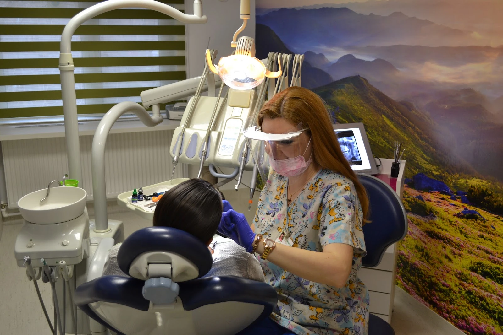

{{Cabinet stomatologic · Iași|Dental practice · Iași|Consultório dentário · Iași}}
Dr. ȚepelușCalen
5,0 {{pe Google · 31 de recenzii|on Google · 31 reviews|no Google · 31 avaliações}}
{{Stomatologie generală pe Strada Conductelor 10, în Iași. Spune-ne motivul vizitei și pregătim programarea.|General dentistry on Strada Conductelor 10, Iași. Tell us why you’d like to come and we’ll prepare the appointment.|Medicina dentária geral na Strada Conductelor 10, em Iași. Diga-nos o motivo da visita e preparamos a marcação.}}

{{Cabinetul|The practice|O consultório}}
{{Un cabinet luminos, cu peisaje pe pereți|A bright practice with landscapes on the walls|Um consultório luminoso, com paisagens nas paredes}}
{{Așa arată spațiul pe care îl vei găsi: perete cu munți în sala de tratament, o sală de așteptare cu pomi în floare și materiale informative la îndemână.|This is the space you’ll find: a mountain mural in the treatment room, a waiting room with blossoming trees and information leaflets within reach.|Este é o espaço que vai encontrar: um mural de montanha na sala de tratamento, uma sala de espera com árvores em flor e folhetos informativos à mão.}}




{{Ce spun pacienții|What patients say|O que dizem os pacientes}}
{{31 de recenzii pe Google|31 reviews on Google|31 avaliações no Google}}
{{Sensul general al recenziilor publice, parafrazat.|The general sense of the public reviews, paraphrased.|O sentido geral das avaliações públicas, parafraseado.}}
{{Pacienții descriu o echipă profesionistă, amabilă și atentă.|Patients describe a professional, friendly and attentive team.|Os pacientes descrevem uma equipa profissional, simpática e atenta.}}
{{Se menționează o experiență bună pe tot parcursul, de la prima consultație.|A good experience is mentioned throughout, from the first consultation.|Menciona-se uma boa experiência do princípio ao fim, desde a primeira consulta.}}
{{Unii pacienți spun că vin la cabinet de ani de zile.|Some patients say they have been coming for years.|Alguns pacientes dizem que vêm há anos.}}
{{Ordin de programare|Appointment order|Ordem de marcação}}
{{Completezi foaia. O trimiți cabinetului.|Fill in the sheet. Send it to the practice.|Preencha a folha. Envie-a ao consultório.}}
{{Cum ajungi|Getting here|Como chegar}}
{{Strada Conductelor 10, Iași|Strada Conductelor 10, Iași|Strada Conductelor 10, Iași}}
- {{Telefon|Phone|Telefone}}0740 251 693
- {{Adresă|Address|Morada}}Strada Conductelor 10, 700080 Iași
- {{Program|Hours|Horário}}{{Duminică închis · luni de la 09:00. Restul orelor: |Closed Sunday · opens Monday at 09:00. Other hours: |Domingo fechado · segunda a partir das 09:00. Restantes horas: }}{{de confirmat|to be confirmed|a confirmar}}

{{Firma de la intrare, ca s-o recunoști din stradă.|The sign at the entrance, so you can spot it from the street.|A placa da entrada, para a reconhecer na rua.}}